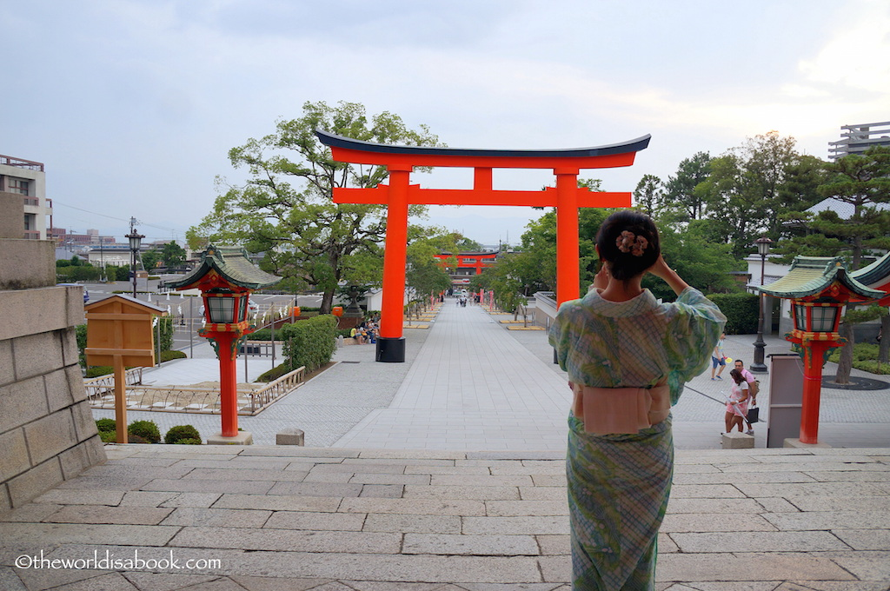
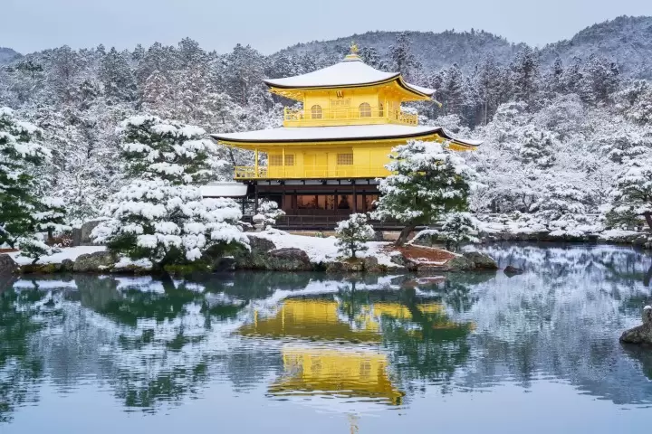

Fushimi Inari Shrine
It is famous for its thousands of vermilion torii gates, Fushimi Inari Shrine is a fabulous and a must-visit destination in Kyoto.
Kinkaku-ji (Golden Pavilion)
One of Kyoto's most iconic landmarks the The Golden Pavilion is a top destiantion.
